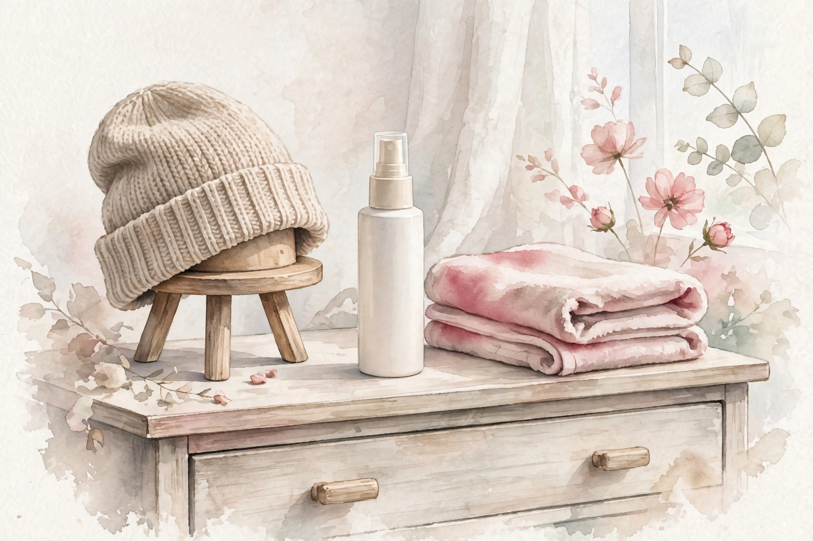
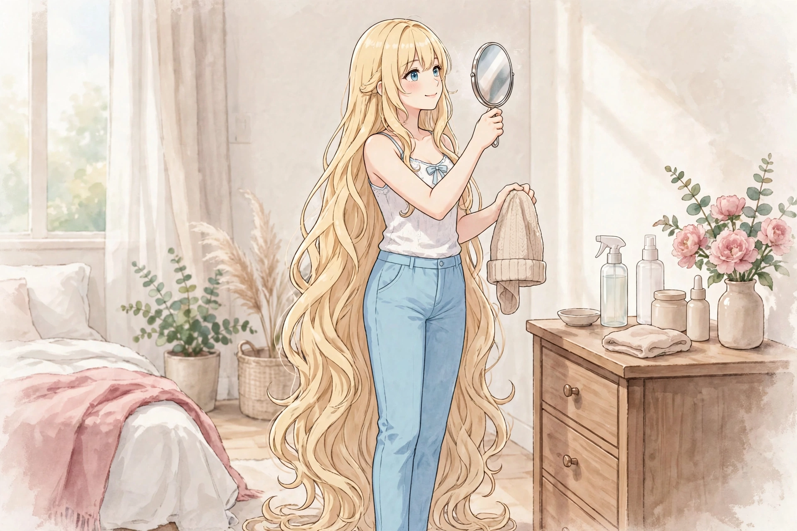

帽子をかぶる日の頭皮ケア

日差し対策や寒さ対策で、帽子をかぶる日は多いものです。一日かぶった日の夕方は、頭皮の蒸れや、髪のつぶれが気になります。ヘッド施術の現場でも、帽子の日のケアについて聞かれることがあります。この記事では、かぶる前から帰宅後までの流れを整理します。
かぶる前の準備：乾かし切ってから
基本は、髪と頭皮をしっかり乾かしてからかぶることです。湿ったまま帽子をかぶると、蒸れやすい状態が長く続きます。朝の時間がない日でも、根元だけは乾かし切ることを優先します。
分け目をいつもと少し変えてかぶると、つぶれ方が一点に集中しません。日差し対策でかぶる場合は、分け目の位置を日によって変える工夫も、習慣にしやすいものです。
帰宅後は、蒸れをリセットする流れ
帰宅したら、まず帽子を脱いで、髪に風を通します。指の腹で頭皮を軽くほぐすように触れると、つぶれた髪の根元も立ち上がりやすくなります。その日の汗のかき方によって、洗髪をするかどうかを判断します。汗をかいた日は洗い、そうでない日は翌朝に回す、といった自分の基準を持っておくと迷いません。
洗う場合は、予洗いを長めにして、シャンプーの量は普段どおりを基本にします。
帽子自体の手入れも、頭皮ケアの一部
帽子の内側は、汗や皮脂がつきやすい場所です。洗える帽子は洗濯表示を確認して洗い、洗えないものは、脱いだ後に内側を乾かしてからしまう習慣をつけます。湿ったまま箱や棚にしまうと、次にかぶるときの状態に影響します。
かぶる前の乾燥、帰宅後のリセット、帽子の手入れ。この3つの流れがそろうと、帽子の日も頭皮まわりは無理なく回ります。
帽子の選び方にも、頭皮側の観点があります。サイズがきつすぎると、一日かぶった後の圧迫感が残ります。試着のときに、額まわりの当たり具合と、脱いだ後の感触を確認しておくと選びやすくなります。内側に汗がつきやすい素材かどうかも、表示で確認できます。よくかぶる帽子は1つに絞らず、数個を替えて使うと、それぞれを乾かす日が作れます。保管は、形を保てる場所に置くか、詰め物をするなどして、型崩れを防ぎます。帽子は衣類と同じで、使う・乾かす・休ませるの循環で扱うのが、長く心地よく使う考え方です。帽子をかぶる日が続く季節は、頭皮の側も、洗う・乾かす・休ませるのリズムを意識します。髪を結んでからかぶる日と、下ろしてかぶる日を替えると、同じ場所ばかりに負担が寄りません。帽子の日は、頭皮と帽子の両方を扱う日として、一日の流れの中に位置づけておくのがおすすめです。

セラフィナ「帽子は乾かし切ってからかぶる。帰ったら風を通して、帽子も乾かしてからしまおう」